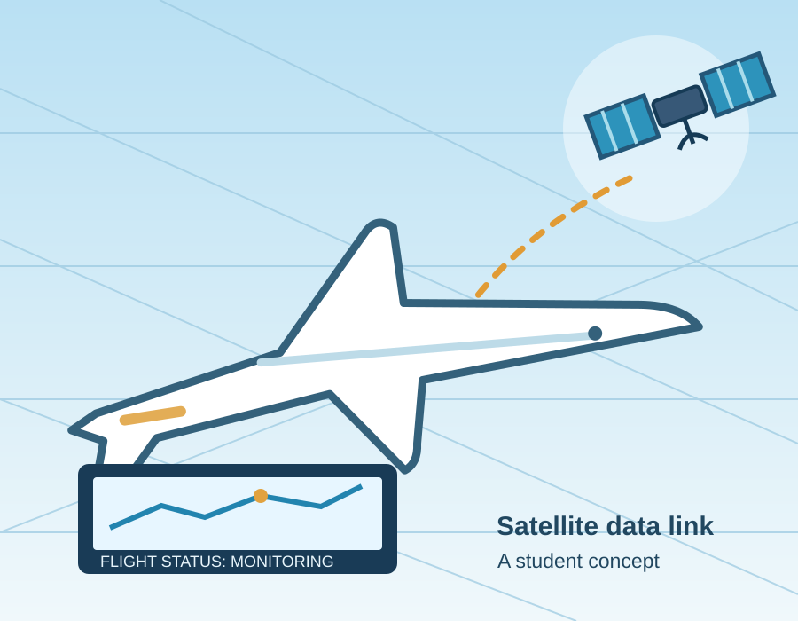

01
Satellite Flight Updates
Send information like position, altitude, and timestamps from the aircraft to a central system.
Honeywell Aerospace
Flight Monitoring
A smarter way to follow flight data
What if important flight readings could be checked while an aircraft is still in the air?
Honeywell Aerospace uses satellite communication to send selected flight information to one shared system. It is designed for flight data analysts, maintenance engineers, and accident investigators who need faster access to flight records.

Traditional flight recorders store valuable information, but getting those records after an accident can be difficult. Our class project looks at how satellite updates and a centralized database could make that information easier to access.
Send information like position, altitude, and timestamps from the aircraft to a central system.
Flag missed updates or unusual readings so the flight data analyst knows where to look.
Keep flight history, maintenance work, and investigation findings connected in one place.